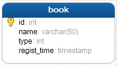
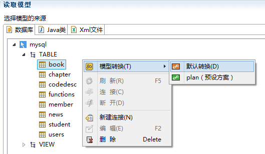
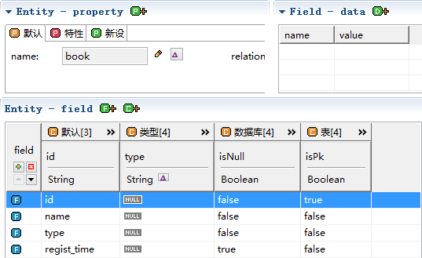
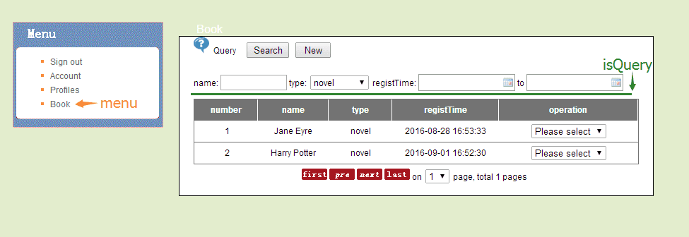
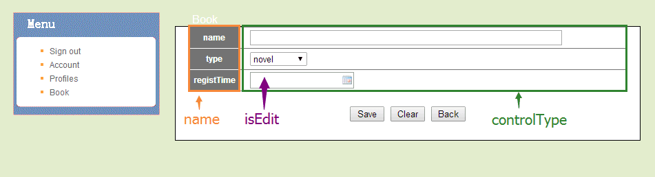
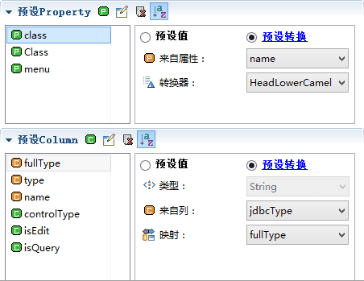
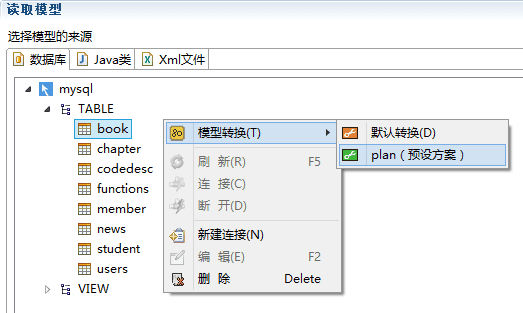
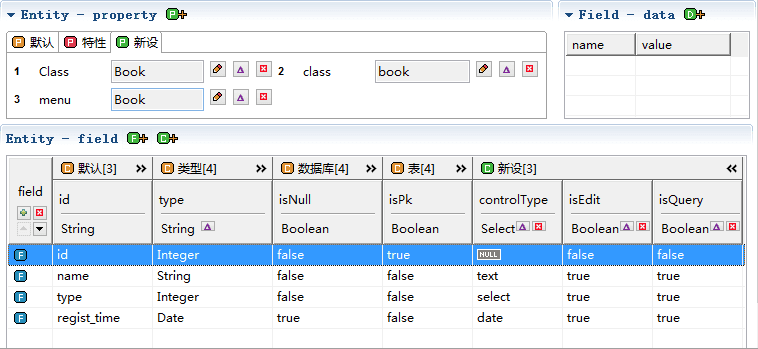

模型
功能描述
模型是核心的资产，模型做为数据源，会注入到模板中，生成最终的代码。
模型如何设计和预设成为关键，这个项目的模型来源数据库的表，模型如何处理直接关系到后续的任务配置和模板的编写。
阅读前需要了解的知识：
模型
标签
模型设计
我们在数据库中新建了一张book表。如何把这张表转换成符合我们需求的模型呢？
book表有4个字段：
- id：主键，类型int，自动增长。
- name：书的名称，类型是varchar，长度50。
- type：书的种类，类型是int。
- regist_time：书的注册时间，类型是timestamp。

我们配置好数据库连接后，找到这张表，点击默认转换。

得到的模型结构如下，默认转换只是把数据库原本的结构模型转换出来。

根据业务需求，模型还缺少一些信息。


需要的属性：
- Class：头字母大写的名称，可以作为类名或者需要头字母大写的部分，它的值是"Book"。
- class：头字母小写的名称，可以作为头字母小写的部分，它的值是"book"。
- menu：界面左侧菜单栏的名称, 它的值是"Book"。
需要的字段：
- name：字段的名称，从id（同表字段名）转换成Java类的属性名（驼峰式），比如regist_time就需要转成registTime。
- type：Java属性的类型，从jdbcType映射过来。
- fullType：Java属性的类型的完整名称（含包名），从jdbcType映射过来。
- controlType：字段对应界面的控件类型，可选有(text、select和date)。
- isEdit：字段是否需要编辑，比如id是主键isEdit是false，其它都为true。
- isQuery：字段是否为查询项。
模型的预设方案
我们可以手动添加和修改这些需要的属性和字段，如何操作请阅读：
当然，还有更方便的方法，通过预设方案转换时直接设置好。
关于预设方案，请阅读:

选择预设转换。

需要的属性和字段都有了，我们稍作修改，得到最终模型。
- controlType（控件类型）：id为null，name为text，type为select，registTime为date。
- isEdit（是否编辑）：id为false，name、type、registTime都为true。
- isQuery（是否查询）：id为false，name、type、registTime都为true。

总结
模型可以根据项目的需求，新增或者修改一些信息，大部分工作都可以在预设方案中完成。在模板中获取这些信息，从而生成对应的代码。模型如何应用到模板，请继续阅读后面模板的内容。